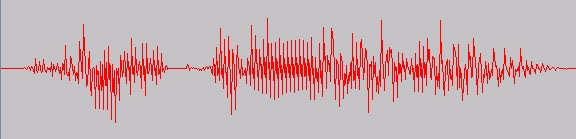
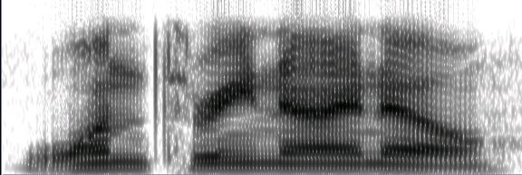

public class DiscreteFourierTransform extends BaseDataProcessor
PROP_NUMBER_FFT_POINTS. The length of the returned power spectrum is the number of FFT points, divided by 2, plus
1. Since the input signal is real, the FFT is symmetric, and the information contained in the whole vector is already
present in its first half.
Note that each call to getData only returns the spectrum of one window of data. To display the
spectrogram of the entire original audio, one has to collect all the spectra from all the windows generated from the
original data. A spectrogram is a two dimensional representation of three dimensional information. The horizontal
axis represents time. The vertical axis represents the frequency. If we slice the spectrogram at a given time, we get
the spectrum computed as the short term Fourier transform of the signal windowed around that time stamp. The
intensity of the spectrum for each time frame is given by the color in the graph, or by the darkness in a gray scale
plot. The spectrogram can be thought of as a view from the top of a surface generated by concatenating the spectral
vectors obtained from the windowed signal.
For example, Figure 1 below shows the audio signal of the utterance "one three nine oh", and Figure 2 shows its
spectrogram, produced by putting together all the spectra returned by this FFT. Frequency is on the vertical axis,
and time is on the horizontal axis. The darkness of the shade represents the strength of that frequency at that point
in time:

Figure 1: The audio signal of the utterance "one three nine
oh".

Figure 2: The spectrogram of the utterance "one three
nine oh" in Figure 1.
| Modifier and Type | Field and Description |
|---|---|
static String |
PROP_INVERT
The property for the invert transform.
|
static String |
PROP_NUMBER_FFT_POINTS
The property for the number of points in the Fourier Transform.
|
logger| Constructor and Description |
|---|
DiscreteFourierTransform() |
DiscreteFourierTransform(int numberFftPoints,
boolean invert) |
| Modifier and Type | Method and Description |
|---|---|
Data |
getData()
Reads the next DoubleData object, which is a data frame from which we'll compute the power spectrum.
|
void |
initialize()
Initializes this DataProcessor.
|
void |
newProperties(PropertySheet ps)
This method is called when this configurable component needs to be reconfigured.
|
getPredecessor, getTimer, setPredecessorgetName, initLogger, toString@S4Integer(defaultValue=-1) public static final String PROP_NUMBER_FFT_POINTS
@S4Boolean(defaultValue=false) public static final String PROP_INVERT
public DiscreteFourierTransform(int numberFftPoints,
boolean invert)
public DiscreteFourierTransform()
public void newProperties(PropertySheet ps) throws PropertyException
ConfigurablenewProperties in interface ConfigurablenewProperties in class ConfigurableAdapterps - a property sheet holding the new dataPropertyException - if there is a problem with the properties.public void initialize()
BaseDataProcessorinitialize in interface DataProcessorinitialize in class BaseDataProcessorpublic Data getData() throws DataProcessingException
getData in interface DataProcessorgetData in class BaseDataProcessorDataProcessingException - if there is a processing errorCopyright © 2014. All rights reserved.